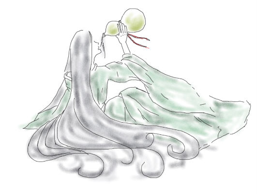

周南·卷耳
作者： 图：
已经好久没给你写信了，你还好吗？
说来好笑，我去后山采菜了。这是你离开以后我第一次上山，还好有碧伶相伴，不然走到山腰都难。山间穹花凋谢，牡丹萎亡，那些彼邻献上的奇花珍草也都不知去了何方。亭台楼阁爬满青苔，让人无处下脚，如是这般谄媚又能如何？
你知道么，就是你那可笑的卷耳竟然开满了整个山腰，对，整个山腰，连沿途的小径都没放过！你说，这后山乌烟瘴气，毒草遍地。我说，这后山山花烂漫，满目惊奇。你说，给我一片空地，我给你投下安宁。我说好，且看你。那日你我共播下刺果，这粘人的小东西确实勾起了我的好奇。但长成之后又能怎样，还不与我尝过的一样，少了些许毛刺而已。
碧伶带的酒都喝完一壶了，你怎么还不回来，我想我还没醉，再与你叙叙前事。
还记得第一次与你见面，你着黑衣带着可笑的面具，我梳稚髻穿着不合身的仆服。那时我挎着薇篮，尝着后山的野草，享受着偷来的欢愉。你藏身的树丛对我来说如同虚设，我本想一走了之，你却将我压在身下。你那蛮力谁又扭的过，五日来的吃食全都靠我薇篮里的野草，你还挑挑捡捡，只吃那多毛的卷耳。要不是那女人喜欢，我怎么会在后山这满是奇宝的地方留下牲畜才吃的菜草。你离开时我全身都失了力气，还好你把我放在小径旁。不然《本史》又要多出一个离奇死者——饿死在山上的少年世子。
第二次与你相见，你着仆服身负绑绳，我锦袍加身以扇遮面。堂下众人皆双股战战，独你被庭院的杨柳吸引，竟还赞叹其形象甚奇——此柳不能垂，高悬于头顶，触手不可及。此事逗乐了那个女人许久，殊不知那是我多日尝叶的结果。那个女人想留你，我更想留你。因为你那一身碧色仆服让我很想尝尝你。
碧伶劝我停一停，这烦人的累马又耍了脾气。我想它也想你了吧，一路上都不知啃食了多少卷耳，怎么还是这般惫懒。还是说这惫懒的样子也是学了你？这壶青梅酒也快喝完了，你还没从山下上来吗？还是你已经在山顶等我了？碧伶说他都看不清我写的是什么了，怎么可能，你一定看得清的对吧。
碧伶的脚又痛了，你的接骨良方也不过尔尔，看来这可怜的仆从和瘦马都没法见证咱们的相见了，也好，没了这两个累赘我走得还能自在些。见了我你可别笑我，我采这卷耳只为拿来尝尝，就像以前一样，可不是为了吃食。这清苦的卷耳只是穿肠而过罢了。
自从你在身边，我再没尝过后山的珍草，这些珍奇没了我的青睐竟让在我面前张牙舞爪起来。还好你在身边，内心饥渴时尝尝你也是好的。但自从你走后，我再无法登上这后山，即便每夜都梦到与你在后山静看日出，但山不是绿的，你也不再着那碧服，那样的世界不要也罢。既然你夜夜都入我梦来，怎么还不来看我呢？我想你了……
啊，又碰到这紫色的奇葩了。我记得我从来都没有种过这种仙草，这仙草从哪里来的呢，难道真的是仙人垂怜我这绝美的后山，故而愿为其增添光彩？你要是在这里就好了，我愿醉卧在你侧怀，偷偷的揪那仙草的嫩叶。这时你就会抓住我的手指放到嘴边轻咬，而我就有理由尝尝你了。
哎，你怎么还不来呢……
说不定我揪了这仙草你就来了……
你怎么还不来呢……
说不定我咬了这仙草你就来了……
你怎么还不来呢……
说不定我吃了这仙草你就来了……
你怎么还不来呢……
哎……
诶？你来啦……